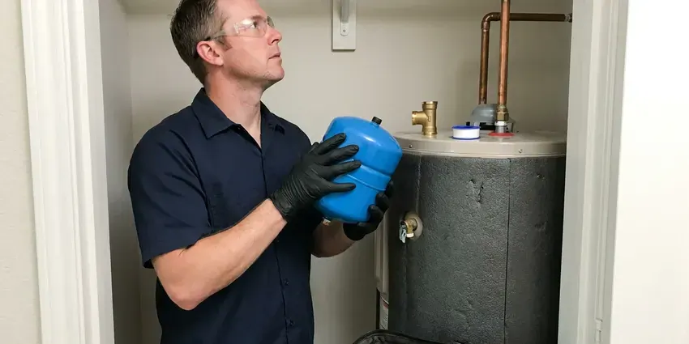

Tankless Water Heater Installation in Kingston, RI
Gas, propane and electric tankless installs in Kingston, RI. JPN Plumbing checks the gas line and panel first.
- Local Crews
- Workmanship Warranty
- Written Quotes
- Permits Pulled

On-Demand Hot Water, Sized Right in Kingston, RI
A tech looks at the gas meter, pipe size and vent path before giving a number.
Tankless Heaters Sized for Your Kingston, RI Home
JPN Plumbing installs tankless water heaters in Kingston that fire a burner only while a hot tap is open, so there is no tank keeping 50 gallons warm through the night. Standby heat loss mostly disappears. It mounts flat on a wall. The corner where the tank stood becomes usable again, which helps in a small garage or closet.
Our expertise includes:
- Gas tankless units up to 199,000 BTU
- Gas line upsizing from the meter to the unit
- Propane tankless installs with correct regulators

Additional Plumbing Installation Services in Kingston, RI
We install water heaters, pumps, lines, and fixtures across Kingston, RI with careful, permitted work that passes inspection the first time.


Customers
Why Choose JPN Plumbing for Tankless Water Heater Installation in Kingston, RI?
Tankless heaters cost more up front than tanks, so getting the install right matters. An undersized unit that short-cycles or a vent that ices up will keep throwing error codes, and you pay for it every month. We size by the numbers.
- Replaceable Parts, Most components can be swapped without replacing the whole unit.
- Gas Done Right, Gas lines are sized by load and length then pressure test it.
- Accurate Sizing, We size by gallons per minute and inlet temperature.
Citywide Coverage
Older central neighborhoods as well as newer developments in Kingston both get our full tankless service. Point-of-use electric units for a distant bath, garage sink or basement bar are part of the work too, fixing a long wait without touching the main heater. Small units, small jobs.
Experienced Team
Our installers know how to fit a tankless unit in a tight space, meeting the clearances the manual requires. They check side, front and top clearances, plan the vent run with the fewest elbows the manufacturer allows, and leave room for a tech to reach the isolation valves without taking anything apart. Flushing should be easy.
Safety-First Approach
Before we leave, we run a CO check and confirm the unit is burning clean. A CO alarm near the bedrooms belongs in any home with gas appliances, and we can add one during the install if you are missing one. They cost very little.
Trusted Certified Kingston Plumbing Services Professionals
At JPN Plumbing, we take pride in licensed, certified plumbing services throughout Kingston, RI. Credentials matter in this trade. Our plumbers hold recognized industry credentials, and they follow strict safety and quality rules on every repair, installation and maintenance call we run.
Call Us Now PHCC Plumbing Contractor Recognition
PHCC Plumbing Contractor Recognition Better Business Bureau (BBB) Accreditation
Better Business Bureau (BBB) Accreditation Angi Certified Pro
Angi Certified Pro ISO 9001 Quality Management Certification
ISO 9001 Quality Management CertificationTankless Jobs We Handle in Kingston, RI
Tankless vs Tank Cost Comparison in Kingston, RI
Upfront, a tankless install in Kingston, RI costs more than a standard tank because of the unit price, the gas line upgrade and the venting changes. Over the long haul, the math narrows. Less standby loss, a life of up to 20 years versus roughly 10 for a tank, and replaceable parts all count over the years. We price both side by side.

Hard Water Protection for Tankless Units in Kingston, RI
Calcium scale is what kills most tankless units early. Private wells serve many rural homes, and owners around Kingston benefit from testing for acidity, iron and other common concerns. Scale coats the heat exchanger, cuts efficiency and triggers error codes, and left alone it can crack the exchanger and end the warranty claim before it starts. A yearly flush prevents it. Service valves make it easy.
Commercial Tankless Water Heater Installation in Kingston
Commercial hot water loads in Kingston are heavier and more constant than residential. A busy restaurant may run a dish machine, three hand sinks and a mop sink at once, and the tankless rack has to hold temperature through the whole lunch rush without dropping a degree. We rack units with a common manifold. Service one, keep the others going.
Upgrading from Tank to Tankless in Kingston, RI
Switching from a tank takes more than unbolting one and hanging the other. A typical 40-gallon gas tank uses around 40,000 BTU, while a whole-home tankless unit may need 150,000 to 199,000, so the gas line from the meter almost always gets upsized. The vent changes as well. Both are on the estimate.
Tankless Water Heater Replacement in Kingston, RI
Replacing an old tankless unit tends to go faster than a conversion. The gas line is already sized and the vent path already exists, so in many homes it is a matter of matching the connections, checking the vent for damage and hanging the new unit. Different brands vent differently. We confirm fit first.
Residential Tankless Water Heater Installation in Kingston
Sizing a home unit depends on two figures: peak gallons per minute and temperature rise. A shower head flows about 2 gallons per minute and a kitchen faucet a bit less, so a house that runs two showers and a sink together needs roughly 5 to 6 gallons at the rise your inlet water calls for. It shortens the list quickly.
Commercial Tankless Water Heater Services in Kingston, RI
Businesses in Kingston, RI with steady hot water use, like salons, restaurants and small gyms, often get more out of two or three tankless units racked together than one big tank. If one unit goes down, the others keep running. Peak demand sets the rack size. Expect a bigger gas line and a mechanical permit on commercial jobs.

Rinnai, Navien and Noritz Installation in Kingston, RI
We install Rinnai, Navien, Noritz and Rheem in Kingston, RI homes all year long. Rinnai has a wide model range and good parts support, Navien builds in recirculation on many models, Noritz makes compact condensing units that fit tight spaces, and Rheem pairs well with their tank lineup. Warranty terms vary. We walk you through them.
Nearby Tankless Water Heater Installation in Kingston, RI
Our crews install tankless heaters in Kingston most weeks of the year, so we have seen most local house layouts. Slab homes with the tank in the garage, homes with the heater in an interior closet and homes with the tank in the attic each have their own best vent and gas route, and knowing that ahead of time keeps the job to one day. Fewer surprises mid-job.
Thinking about a conversion? Book a free estimate with our local crew. We look at your current heater, check the gas meter and line size, find the best vent route and then put a written price in your hands before we leave the house. The number is in writing. Most visits take under an hour.
JPN Plumbing at a Glance
- Fully licensed plumbing team covering Kingston, RI
- Same-day appointments and 24/7 emergency response
- Upfront, flat-rate pricing before work begins
- 4.8-star rated by 684+ Rhode Island customers
Kingston Map
Kingston Information
- Population
- 7,825
- Area codes
- Local
- Service area
- Kingston and towns within a 40 mile drive
- Nearby
- Wakefield-Peace Dale, Newport, Newport East, Westerly
A tankless heater lights the burner only when hot water is called for, so there is no tank losing heat all night in your Kingston, RI home.
Expert Services
Reach out to JPN Plumbing for reliable plumbing work done by licensed pros in Kingston, RI.
Our Specialized Plumbing Services in Kingston, RI
At JPN Plumbing, you get every kind of plumbing service from one company across Kingston, RI. From leak detection to full system installs, our team works fast and charges fair prices on homes and commercial properties alike. Explore our core services below:


From Sizing to First Hot Shower, Tankless Work in Kingston, RI
Most of the work happens before we order a unit.
In-Home Estimate
Call (401) 364-2507 to set up an estimate. You get a written quote covering unit, gas and vent.
Install and Upgrade
The heater, gas upgrade and new vent all go in. One day covers most installs.
Test and Show You
After testing gas and water, we go over the controls with you. We explain the annual flush too.
Frequently Asked Questions About Tankless Water Heater Installation in Kingston
Tankless installs in Kingston tend to fall between $3,000 and $6,000. The fuel type, unit size, gas line work and venting route are what push a job toward the low or high end. You get a firm number on site.
Two numbers: peak gallons per minute and temperature rise. Add up the fixtures you run together, then figure the rise from your incoming water temperature to about 120 degrees, and that tells us which units can keep up. It takes a few minutes.
Most hire a licensed plumber, since the job includes gas sizing, venting, electrical and a permit. A DIY install may void coverage and fail the inspection.
Gas units do. Condensing units generally vent in PVC or polypropylene, non-condensing units need Category III stainless, and the old tank's B-vent cannot be reused. Electric units need no vent.
That depends on how many fixtures run at once and your incoming water temperature. Most homes land around 7 to 10 gallons per minute.
Many makers offer 10 to 15 years on the heat exchanger and less on parts. We also warranty our installation labor.
Hot water that keeps going when sized right, lower standby loss and a unit that hangs on the wall. Tankless heaters also tend to last longer, often 15 to 20 years with yearly flushing, compared to about 10 to 12 years for most gas tanks. The upfront price is higher.
Typically, because gas, vent and water connections are involved. The permit and inspection are on us.
What People Are Saying About Our Plumbing Experts?

Patricia H.
We had a slab leak that two other companies could not find. JPN Plumbing located it in under an hour with a listening device. They rerouted the line through the attic instead of breaking up the floor, so we kept our kitchen tile.
Slab Leak Repair · Warwick, RI
Tyler J.
We bought a taller comfort height toilet for my dad, who just had knee surgery. The plumber pulled the old one, found the flange was cracked, and replaced it before setting the new bowl. Took about two hours.
Toilet Installation · Wakefield-Peace Dale, RIDaniel K.
A pipe burst in the garage ceiling at 11 at night. Someone answered on the second ring, and the plumber was in my driveway about fifty minutes later. He shut off the main, cut out the split section, and had water back on before 2 am.
Emergency Plumbing · Newport East, RIKaren W.
After our third pinhole leak in copper, we stopped patching. JPN Plumbing gave us a written plan room by room and repiped the house in PEX while we stayed in it. The crew covered our floors every morning and cleaned up every night.
Repiping · Warwick, RI
Lisa C.
Water was pouring out from under the washing machine on a holiday weekend. JPN Plumbing talked me through closing the valves over the phone and had a plumber at the house within ninety minutes. It was a burst fill hose.
Emergency Plumbing · Newport East, RI
James P.
Our restaurant had a slow leak at the hand sink that was rotting the cabinet base. JPN Plumbing came in at six in the morning before prep, replaced the trap and both supply lines, and was packed up before my first cook clocked in.
Commercial Plumbing · Newport, RI